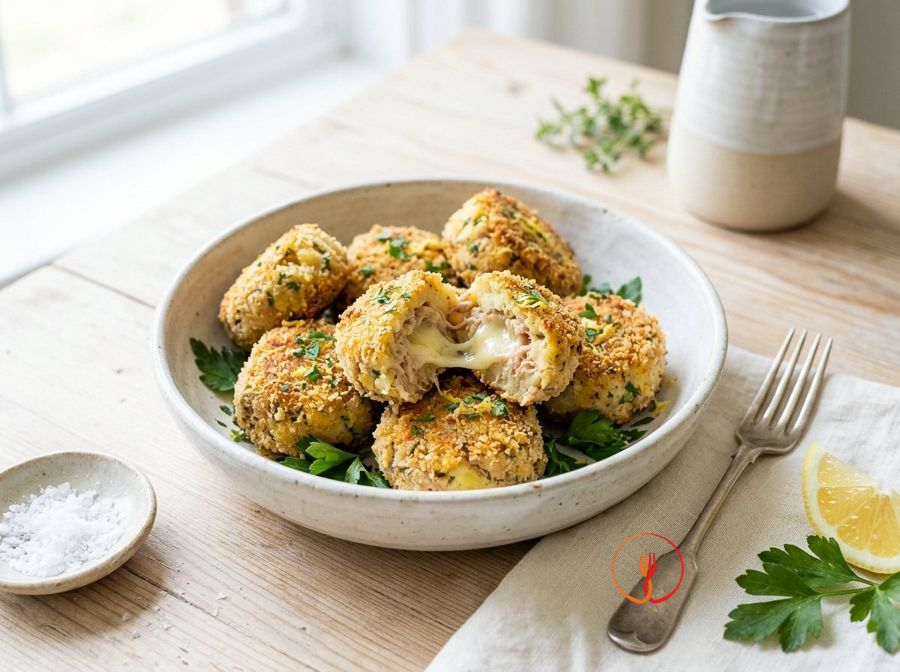

Tuna and Potato Patties with an Oozy Centre
These patties are a classic 'dinner-saver' made with ingredients everyone has in their pantry. The cheese heart makes them irresistible for children, and oven-baking keeps them light.
Ingredients
- Drained tuna in oil320 g
- Boiled potatoes400 g
- Diced Edam or Provola (a semi-hard Italian pasta filata cheese)60 g
- Breadcrumbs80 g
- Egg1 pcs
- Lemon zestq.b.
- Extra virgin olive oil15 ml
Allergens
Fish, Gluten, Eggs, Milk
Method
- Begin by peeling the 400g of warm boiled potatoes and mashing them with a potato masher or a fork in a large mixing bowl. Work them vigorously until you achieve a smooth, consistent puree free from any large lumps. Ensure the potatoes are well-dried before mashing to prevent the mixture from becoming too watery. The final result should be a soft, velvety base ready to incorporate the other ingredients. Chef's tip: use floury potatoes, as they release the right amount of starch to bind the mixture without making it heavy.
- Add the 320g of well-drained tuna, finely flaked with a fork, to the puree along with the grated zest of one organic lemon. Mix these two ingredients with a wooden spoon, incorporating the tuna so it is evenly distributed throughout the potato mass. Scent the mixture with the lemon zest, which provides a fresh note necessary to balance the saltiness of the fish. You should achieve a uniform pinkish mixture with a citrusy aroma. Chef's tip: flake the tuna very finely to prevent large chunks from making the meatball fall apart during cooking.
- Add the whole egg and approximately 20g of breadcrumbs (equivalent to two generous tablespoons) to provide structure. Knead vigorously with your hands inside the bowl until the egg is completely absorbed and the mixture feels firm and malleable. If the dough still feels too sticky, add a pinch of extra breadcrumbs, but do so with extreme caution. The result must be a compact mass that no longer sticks to the sides of the bowl. Chef's tip: do not overdo the breadcrumbs in the mixture, otherwise the meatballs will be too hard once cooked.
- Prepare the melting heart by cutting the 60g of Edam or Provola cheese into small, regular cubes of about 1 cm per side. Take a portion of the mixture roughly the size of a walnut (about 40-50g) and flatten it slightly in the palm of your hand. Place a cube of cheese exactly in the centre of the tuna and potato base. Ensure the cheese is chilled from the fridge so it doesn't start melting prematurely. Chef's tip: pat the cheese cubes dry with kitchen paper if they seem moist to ensure a perfect seal.
- Gently fold the edges of the mixture over the cheese cube, sealing it inside, and shape it between your palms to form a perfect sphere. Repeat the process until all ingredients are used, trying to keep all meatballs the same size for even cooking. Check that there are no cracks on the surface, as the cheese might leak out during its time in the oven. You should get about 16-18 smooth, compact meatballs. Chef's tip: lightly dampen your hands with water or oil to shape the meatballs more easily without them sticking to your skin.
- Pour the remaining 60g of breadcrumbs into a shallow dish and roll each meatball inside, using light finger pressure. Ensure the entire surface, including the sides, is covered with a thin and even layer of bread. This step is crucial for creating that crispy crust that will protect the soft heart. Shake each meatball between your hands to remove any excess breadcrumbs. Chef's tip: for an even crispier coating, you can mix a tablespoon of cornmeal with the traditional breadcrumbs.
- Line a baking tray with parchment paper and arrange the meatballs well apart to allow hot air to circulate properly. Take the 15ml of extra virgin olive oil and, using a pastry brush or a mister, distribute it evenly over the surface of each meatball. Preheat the oven to 200°C (fan or conventional) before putting them in. The tray should be placed on the middle shelf to ensure consistent heat from both top and bottom. Chef's tip: using an oil mister allows for less oil while still ensuring a perfect golden finish.
- Bake the meatballs at 200°C for a total time of about 20 minutes, constantly monitoring the colour. Halfway through (after about 10 minutes), remove the tray and gently turn the meatballs using two spoons or kitchen tongs. This ensures that both sides become equally crispy and golden. Towards the end of the time, the kitchen should smell of fish and toasted bread. Chef's tip: do not turn them too early or you risk breaking them while they are still tender.
- Remove the meatballs from the oven when the outer crust is visibly golden and crispy to the touch. Let them rest on the tray for about 3 minutes before transferring them to a serving plate or bowl. This short rest helps stabilise the internal structure and allows the cheese to reach the ideal gooey consistency without burning your mouth. Serve them warm to maximise the surprise effect of the melted heart. Chef's tip: serve the dish with a light lime mayonnaise or a fresh lamb's lettuce salad to cleanse the palate.
Nutrition facts (estimate)
| Per serving (195 g) | Per 100 g | |
|---|---|---|
| Energy | 1686 kJ / 403 kcal | 865 kJ / 207 kcal |
| Protein | 28.3 g | 14.5 g |
| Carbohydrates | 31.5 g | 16.2 g |
| of which sugars | 1.8 g | 0.9 g |
| Fat | 15.5 g | 7.9 g |
| of which saturates | 4.8 g | 2.5 g |
| Fibre | 3.2 g | 1.6 g |
| Salt | 1.35 g | 0.7 g |
AI estimates based on average CREA / USDA data: indicative only, not a substitute for medical or dietitian advice.
Open the recipe in the app for the shopping list, ingredient sheets and nearby shops.